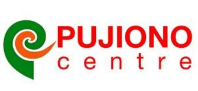

Beranda
Tentang Kami
Profil Lembaga
Mitra Strategis dalam Ketahanan Bencana dan Perubahan Iklim — Organisasi Manajemen Pengetahuan Lokal yang Memelopori Reformasi Kemanusiaan dan Pelokalan di Indonesia.

Mitra Strategis dalam Ketahanan Bencana dan Perubahan Iklim — Organisasi Manajemen Pengetahuan Lokal yang Memelopori Reformasi Kemanusiaan dan Pelokalan di Indonesia.
Pujiono Centre adalah organisasi nirlaba pengelolaan pengetahuan lokal Indonesia di bidang manajemen risiko bencana, tanggap darurat, dan respons kemanusiaan. Kami berfokus mendorong pengambilan keputusan, perumusan kebijakan, serta pemrograman berbasis bukti (evidence-based decision and policy making).
Sebagai salah satu CSO lokal yang berada di barisan terdepan dalam reformasi kemanusiaan dan agenda pelokalan (localisation), Pujiono Centre aktif menjembatani pengalaman masyarakat akar rumput dengan jejaring kebijakan nasional hingga internasional.

Layanan konsultansi profesional untuk asesmen, evaluasi program, dan pendampingan teknis kebijakan kebencanaan.
Penyebarluasan riset, pengemasan ulang praktik baik CSO, dan diseminasi pembelajaran ke tingkat nasional & global.
Pengelolaan repositori pengetahuan, dokumentasi pembelajaran, dan sintesis bukti pengalaman organisasi lapangan.
Pengurangan risiko bencana terpadu, integrasi adaptasi iklim, serta perencanaan kesiapsiagaan komunitas rentan.
Melakukan riset mandiri, kemitraan, maupun riset pesanan, asesmen kebutuhan, serta evaluasi program untuk pengembangan kebijakan, perencanaan MEAL, dan advokasi.
Mengemas dan mengeskalasi pengalaman serta praktik baik CSO (termasuk kesetaraan gender dan inklusi) menjadi pengetahuan yang dapat dibagikan di tingkat lokal, nasional, hingga global.
Menyelenggarakan pelatihan kustom, lokakarya, seminar, dan konferensi bagi CSO, pemerintah daerah, serta kementerian/lembaga nasional.
Mendorong, membentuk, mempromosikan, dan berkontribusi aktif dalam simpul jejaring serta gerakan CSO di tingkat lokal, nasional, dan global.
Menyediakan dan memimpin ruang dialog strategis untuk diseminasi riset, penentuan posisi, serta negosiasi peran CSO di hadapan pemerintah, aktor internasional, dan donor.